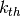
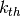

Kernels & Means¶
Simple Kernel & Mean¶
You may already seen, we can specify a kernel function like this(same for mean fucntions):
k = cov.RBF( log_ell=-1., log_sigma=0. )
There are several points need to be noticed:
- Most parameters are initilized in their logorithms. This is because we need to make sure they are positive during optimization. e.g. Here length scale and signal variance should always be positive.
- Most kernel functions have a scalar in front, namely signal variance(set by log_sigma)
- If you will do optimization later anyway, you can just leave parameters to be default
Some Special Cases¶
For some kernels/means, number of hyperparameters depends on the dimension of input data. You can either enter the dimension, which use default values:
m = mean.Linear( D=x.shape[1] )
or you can initialze with the exact hyperparameters, you should enter as a list, one element for each dimension
m = mean.Linear( alpha_list=[0.2, 0.4, 0.3] )
- All these “hyp-dim-dependent” functions are:
- mean.Linear
- cov.RBFard
- cov.LINard
- cov.RQard
For linear kernel, there is NO signal variance(scalar) in front of the function.
If you want to add a scalar for it, you can use:
k = 0.5 * cov.LIN()
If you also want to add a bias term:
k = 0.5 * cov.LIN() + cov.Const(c=1.)
Note 0.5 will also be treated as a hyperparameter. This also applies in cov.LINard.
For cov.RBFunit(), its signal variance is always 1 (because of unit magnitude). Therefore this function do not have a hyperparameter of “signal variance”.
- cov.Poly() has three parameters, where hyperparameters are:
- c -> inhomogeneous offset
- sigma -> signal deviation
- however,
- d -> order of polynomial will be treated as normal parameter, i.e. will not be trained
Explicitly set cov.Noise is not necessary, because noise are already added in likelihood.
Composite Kernels & Meams¶
Adding and muliplying Kernels(Means) is really simple:
k = cov.Periodic() * cov.RBF()
k = 0.5*cov.LIN() + cov.Periodic()
Scalar will also be treated as a hyperparameter. For example, k = s1 * k1 + s2 * k2, then the list of hyperparameters is hyp = [s1, k1.hyp, s2, k2.hyp]. Scalar is passed in logorithm domain such that it will always be positive during optimization.
Except linear kernel, all kernel functions have a scalar (signal variance) as hyperparameter. Therefore, the only explict scalar might be added to cov.LIN()
Beside + / *, there is also a power operator for mean functions:
m = ( mean.One()+mean.Linear(alpha_list=[0.2]) )**2
Precomputed Kernel Matrix¶
In certain cases, you may have a precomputed kernel matrix, but its non-trivial to write down the exact formula of kernel functions. Then you can specify your kernel in the following way. A precomputed kernel also fits with other kernels. In other words, it can also be composited as the way other kernels functions do.
k = cov.Pre(M1, M2)
M1 and M2 are your precomputed kernel matrix,
where,
- M1 is a matrix with shape number of training points plus 1 by number of test points
- cross covariances matrix (train by test)
- last row is self covariances (diagonal of test by test)
- M2 is a square matrix with number of training points for each dimension
- training set covariance matrix (train by train)
A precomputed kernel can also be composited with other kernels. Similar to cov.LIN(), you need to explictly add scalar for cov.Pre().
k = 0.5*cov.Pre(M1, M2) + cov.RBF()
Customizing Kernel & Mean¶
We also support you to create your own kernel/mean class, your customized kernel class need to follow the structure template as below:
# Your kernel class needs to inherit base class Kernel,
# which is in the module of Core.cov
class MyKernel(Kernel):
def __init__(self, para1=0., para2=0., para3=0.):
self.hyp = [para1, para2] # hyperparameters that can be trained
self.para = [para3] # static parameters
def proceed(self, x=None, z=None, der=None):
''' x is n by D training patterns matrix, and z is nn by D test case matrix'''
return A
- where the returning matrix A depends on the input:
- if z == None, A is covariance matrix of x with shape (n,n)
- elif z == ‘diag’, A is self covariance matrix with shape (n,1)
- else z is a matrix (given test points), A is covariance between data sets x and z with shape (n,nn)
- if der == None, return A as defined previously.
- else der != None, i.e. given der as an integer der =
 , return the derivative matrix wrt. to  hyperparameter.
, return the derivative matrix wrt. to  hyperparameter.
and for customized mean class:
# Your mean class needs to inherit base class Mean,
# which is in the module of Core.mean
class MyMean(Mean):
def __init__(self, para1=0., para2=0., para3=0.):
self.hyp = [para1, para2] # hyperparameters that can be trained
self.para = [para3] # static parameters
def proceed(self, x=None, der=None):
''' x is n by D training patterns matrix'''
return A
- where the returning matrix A depends on the input:
- if der == None, return A as the mean of x
- else der != None, return the derivative of mean wrt. to hyperparameter.
List of Kernels and Default Parameters¶
- class pyGPs.Core.cov.Const(log_sigma=0.0)[source]¶
Constant kernel. hyp = [ log_sigma ]
Parameters: log_sigma – signal deviation.
- class pyGPs.Core.cov.Kernel[source]¶
This is a base class of Kernel functions there is no computation in this class, it just defines rules about a kernel class should have each covariance function will inherit it and implement its own behaviour
- class pyGPs.Core.cov.LINard(D=None, log_ell_list=None)[source]¶
Linear covariance function with Automatic Relevance Detemination. hyp = log_ell_list
Parameters: - D – dimension of training data. Set if you want default ell, which is 0.5 for each dimension.
- log_ell_list – characteristic length scale for each dimension.
- class pyGPs.Core.cov.Matern(log_ell=0.0, d=3, log_sigma=0.0)[source]¶
Matern covariance function with nu = d/2 and isotropic distance measure. For d=1 the function is also known as the exponential covariance function or the Ornstein-Uhlenbeck covariance in 1d. d will be rounded to 1, 3, or 5. hyp = [ log_ell, log_sigma]
Parameters: - d – d is 2 times nu. Can only be 1,3 or 5.
- log_ell – characteristic length scale.
- log_sigma – signal deviation.
- class pyGPs.Core.cov.Noise(log_sigma=0.0)[source]¶
Independent covariance function, i.e “white noise”, with specified variance. Normally NOT used anymore since noise is now added in liklihood. hyp = [ log_sigma ]
Parameters: log_sigma – signal deviation.
- class pyGPs.Core.cov.Periodic(log_ell=0.0, log_p=0.0, log_sigma=0.0)[source]¶
Stationary kernel for a smooth periodic function. hyp = [ log_ell, log_p, log_sigma]
Parameters: - log_p – period.
- log_ell – characteristic length scale.
- log_sigma – signal deviation.
- class pyGPs.Core.cov.PiecePoly(log_ell=0.0, v=2, log_sigma=0.0)[source]¶
Piecewise polynomial kernel with compact support. hyp = [log_ell, log_sigma]
Parameters: - log_ell – characteristic length scale.
- log_sigma – signal deviation.
- v – degree v will be rounded to 0,1,2,or 3. (not treated as hyperparameter, i.e. will not be trained).
- class pyGPs.Core.cov.Poly(log_c=0.0, d=2, log_sigma=0.0)[source]¶
Polynomial covariance function. hyp = [ log_c, log_sigma ]
Parameters: - log_c – inhomogeneous offset.
- log_sigma – signal deviation.
- d – degree of polynomial (not treated as hyperparameter, i.e. will not be trained).
- class pyGPs.Core.cov.Pre(M1, M2)[source]¶
Precomputed kernel matrix. No hyperparameters and thus nothing will be optimised.
Parameters: - M1 – cross covariances matrix(train+1 by test). last row is self covariances (diagonal of test by test)
- M2 – training set covariance matrix (train by train)
- class pyGPs.Core.cov.RBF(log_ell=0.0, log_sigma=0.0)[source]¶
Squared Exponential kernel with isotropic distance measure. hyp = [log_ell, log_sigma]
Parameters: - log_ell – characteristic length scale.
- log_sigma – signal deviation.
- class pyGPs.Core.cov.RBFard(D=None, log_ell_list=None, log_sigma=0.0)[source]¶
Squared Exponential kernel with Automatic Relevance Determination. hyp = log_ell_list + [log_sigma]
Parameters: - D – dimension of pattern. set if you want default ell, which is 0.5 for each dimension.
- log_ell_list – characteristic length scale for each dimension.
- log_sigma – signal deviation.
- class pyGPs.Core.cov.RBFunit(log_ell=0.0)[source]¶
Squared Exponential kernel with isotropic distance measure with unit magnitude. i.e signal variance is always 1. hyp = [ log_ell ]
Parameters: log_ell – characteristic length scale.
- class pyGPs.Core.cov.RQ(log_ell=0.0, log_sigma=0.0, log_alpha=0.0)[source]¶
Rational Quadratic covariance function with isotropic distance measure. hyp = [ log_ell, log_sigma, log_alpha ]
Parameters: - log_ell – characteristic length scale.
- log_sigma – signal deviation.
- log_alpha – shape parameter for the RQ covariance.
- class pyGPs.Core.cov.RQard(D=None, log_ell_list=None, log_sigma=0.0, log_alpha=0.0)[source]¶
Rational Quadratic covariance function with Automatic Relevance Detemination (ARD) distance measure. hyp = log_ell_list + [ log_sigma, log_alpha ]
Parameters: - D – dimension of pattern. set if you want default ell, which is 0.5 for each dimension.
- log_ell_list – characteristic length scale for each dimension.
- log_sigma – signal deviation.
- log_alpha – shape parameter for the RQ covariance.
List of Means and Default Parameters¶
- class pyGPs.Core.mean.Const(c=5.0)[source]¶
Constant mean function. hyp = [c]
Parameters: c – constant value for mean